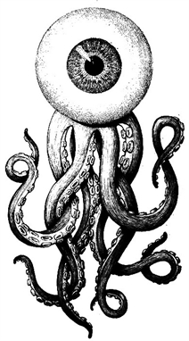

&
SOLITUDE
CONFORMISME
"On ne peut être vraiment soi qu'aussi longtemps qu'on est seul ; qui n'aime donc pas la solitude n'aime pas la liberté, car on n'est libre qu'étant seul. Toute société a pour compagne inséparable la contrainte et réclame des sacrifices qui coûtent d'autant plus cher que la propre individualité est plus marquante. Par conséquent, chacun fuira, supportera ou chérira la solitude en proportion exacte de la valeur de son propre moi." A. Schopenhauer
De nombreuses études révèlent que la solitude serait plus dommageable et nocive pour la santé que le manque d’activités physiques, l’alcoolisme, le tabagisme ou l’obésité, influençant ainsi la hausse des prescriptions d'antidépresseurs ces dernières années chez les enfants, les adolescents, mais aussi les aînés. Des études ont hypothétisé que les gens esseulés courent le même genre de risque pour leur santé que s’ils fumaient jusqu’à 15 cigarettes par jour. Une étude phare publiée en 2015 dans la revue de l’Académie américaine des sciences a montré que la solitude et la perception d’être isolé socialement provoquent des changements physiologiques qui peuvent rendre une personne malade ou la faire mourir prématurément. Quand on se sent seul au monde, les hormones de stress grimpent, l’inflammation augmente dans le corps et le système immunitaire s’affaiblit.
Et les indices d’une épidémie de solitude s’accumulent. Une personne est isolée lorsqu’elle ne rencontre pas physiquement les membres de 5 réseaux de sociabilité : le travail, la famille, les relations amicales ou professionnelles et le milieu associatif selon une étude de la Fondation de France qui confirme l’ampleur de ce phénomène : en 2023, 12 % des Français se trouvent en situation d’isolement total, et une personne sur 3 n’a aucun ou qu’un seul réseau de sociabilité. En ce qui concerne le sentiment de solitude, 1 personne interrogée sur 5 indique se sentir régulièrement seule (21 %). Parmi elles, 83 % souffrent de cette situation, Les gens qui disent ne pas avoir d’amis proches ou même aucune connaissance atteignent des proportions inquiétantes. Et pourtant, on entend à peine parler de la solitude. Beaucoup moins, en tout cas, que l’obésité ou le tabagisme. C’est une épidémie invisible.
Précisons ici la définition de la solitude en se positionnant à la lumière de la philosophe Hannah ARENDT qui distingue trois manières d’être seul : l’isolement, l’esseulement et la solitude. L’isolement, c’est lorsque je ne suis ni avec moi-même, ni en compagnie des autres. Il peut être positif dans la mesure où il permet de se concentrer pour réaliser une tâche sans être dérangé (travailler, lire, etc.), mais aussi négatif, car " les autres avec qui je partage un certain souci pour le monde peuvent se détourner de moi et m’oublier." L’isolement peut conduire à l’esseulement et à l’ennui, c’est-à-dire au sentiment pénible d’être seul. Alors, je recherche la compagnie des autres mais celle-ci fait défaut. Ou alors que "je me sens incapable d’établir un contact avec eux". L’isolement forcé, à cause d’une maladie par exemple, peut provoquer l’esseulement. Mais ce sentiment peut également surgir au milieu d’une foule avec laquelle je ne me reconnais aucune attache. Il est cependant possible de surmonter ce sentiment négatif en le transformant en solitude. Celle-ci implique que, bien que seul, je sois avec quelqu’un (c’est-à-dire moi-même). Elle signifie que je suis deux en un. C’est un mode d’être où, en quelque sorte, l’on se dédouble pour se mettre en compagnie de soi-même et devenir son propre ami. C’est ainsi qu’il devient possible de dialoguer avec soi, de se connecter à ses désirs profonds. Ce qui faisait dire à l’homme politique romain CATON : "Jamais je ne suis plus actif que lorsque je ne fais rien, et jamais je ne suis moins seul que lorsque je suis avec moi-même". La polarité de compréhension ainsi change.
Dans son essai, le sociologue et psychanalyste Erich FROMM soutient que nous naissons avec des chaînes originelles qui nous maintiennent en état de servitude mais qui nous procurent aussi un profond sentiment de sécurité. Il en va ainsi, concrètement, du cordon ombilical et du besoin de l’autorité parentale en bas âge. Ces chaînes se manifestent aussi quant au rôle de chacun dans la société : tout est prédéterminé, et l’individu n’a pas à subir le supplice du doute qu’entraîne la liberté. Dans les deux cas, ces chaînes éclatent avec l’émergence de l’individualité, qu’il ne faut pas confondre avec l’individualisme. L’humain est alors plongé dans un insoutenable sentiment d’insécurité, d’impuissance et d’isolement.
Et les indices d’une épidémie de solitude s’accumulent. Une personne est isolée lorsqu’elle ne rencontre pas physiquement les membres de 5 réseaux de sociabilité : le travail, la famille, les relations amicales ou professionnelles et le milieu associatif selon une étude de la Fondation de France qui confirme l’ampleur de ce phénomène : en 2023, 12 % des Français se trouvent en situation d’isolement total, et une personne sur 3 n’a aucun ou qu’un seul réseau de sociabilité. En ce qui concerne le sentiment de solitude, 1 personne interrogée sur 5 indique se sentir régulièrement seule (21 %). Parmi elles, 83 % souffrent de cette situation, Les gens qui disent ne pas avoir d’amis proches ou même aucune connaissance atteignent des proportions inquiétantes. Et pourtant, on entend à peine parler de la solitude. Beaucoup moins, en tout cas, que l’obésité ou le tabagisme. C’est une épidémie invisible.
Précisons ici la définition de la solitude en se positionnant à la lumière de la philosophe Hannah ARENDT qui distingue trois manières d’être seul : l’isolement, l’esseulement et la solitude. L’isolement, c’est lorsque je ne suis ni avec moi-même, ni en compagnie des autres. Il peut être positif dans la mesure où il permet de se concentrer pour réaliser une tâche sans être dérangé (travailler, lire, etc.), mais aussi négatif, car " les autres avec qui je partage un certain souci pour le monde peuvent se détourner de moi et m’oublier." L’isolement peut conduire à l’esseulement et à l’ennui, c’est-à-dire au sentiment pénible d’être seul. Alors, je recherche la compagnie des autres mais celle-ci fait défaut. Ou alors que "je me sens incapable d’établir un contact avec eux". L’isolement forcé, à cause d’une maladie par exemple, peut provoquer l’esseulement. Mais ce sentiment peut également surgir au milieu d’une foule avec laquelle je ne me reconnais aucune attache. Il est cependant possible de surmonter ce sentiment négatif en le transformant en solitude. Celle-ci implique que, bien que seul, je sois avec quelqu’un (c’est-à-dire moi-même). Elle signifie que je suis deux en un. C’est un mode d’être où, en quelque sorte, l’on se dédouble pour se mettre en compagnie de soi-même et devenir son propre ami. C’est ainsi qu’il devient possible de dialoguer avec soi, de se connecter à ses désirs profonds. Ce qui faisait dire à l’homme politique romain CATON : "Jamais je ne suis plus actif que lorsque je ne fais rien, et jamais je ne suis moins seul que lorsque je suis avec moi-même". La polarité de compréhension ainsi change.
Dans son essai, le sociologue et psychanalyste Erich FROMM soutient que nous naissons avec des chaînes originelles qui nous maintiennent en état de servitude mais qui nous procurent aussi un profond sentiment de sécurité. Il en va ainsi, concrètement, du cordon ombilical et du besoin de l’autorité parentale en bas âge. Ces chaînes se manifestent aussi quant au rôle de chacun dans la société : tout est prédéterminé, et l’individu n’a pas à subir le supplice du doute qu’entraîne la liberté. Dans les deux cas, ces chaînes éclatent avec l’émergence de l’individualité, qu’il ne faut pas confondre avec l’individualisme. L’humain est alors plongé dans un insoutenable sentiment d’insécurité, d’impuissance et d’isolement.

Et d'un regard archaïque et tribal, l'homme est un être social, Il peut être alors considéré la solitude et l’isolement non pas uniquement — voire surtout pas — comme étant le fait d’être seul, mais plutôt comme une déconnexion au monde. Un manque d’interaction de l’humain avec ses semblables ainsi qu’avec la nature. Ce sentiment est l’un de ceux qu’il craint le plus, car il mène à la désintégration mentale, tout comme la famine conduit à la mort. Effrayé par ce sentiment, l’individu cherchera quelqu’un ou quelque chose pour s’enchaîner à nouveau, ce qui peut générer une sensibilité à la dépendance affective. De cette manière, il replongera artificiellement et temporairement dans son sentiment de sécurité et apaisera ainsi son sentiment d’isolement. C’est dans ces circonstances qu’il aura fréquemment recours à des échappatoires, à des mécanismes de fuite, de compensation comme par exemple les addictions ou encore le conformisme, ce dernier qui serait un moyen d'apaiser le sentiment de solitude, sans pour autant sombrer dans les échappatoires (comme les addictions).
Le conformisme est défini comme étant le mécanisme voulant que l’individu cesse d’être lui-même afin d’agir selon les attentes des autres ; le phénomène du caméléon, en d’autres termes. Par ce mécanisme, l’individu abandonne son individualité afin de se conduire en automate et ainsi adoucir momentanément son sentiment de solitude. Cette échappatoire a aussi pour effet d’induire en nous des pensées et des sentiments qui ne sont pas nôtres, ce qui nous donne l’impression qu’ils sont la règle, alors que nos véritables pensées et sentiments seraient l’exception. Ce mécanisme de fuite crée l’illusion suivante chez l’individu : pour autant qu’il ne soit pas forcé d’agir en vertu d’une force externe (tels un employeur ou le gouvernement), il pense que ses décisions sont authentiquement siennes. Pourtant, un nombre considérable d’entre elles sont conditionnées (par la publicité ou les médias par exemple), mais le conformisme conforte l’individu dans sa complaisance. À terme, l’occultation de son identité propre, par le fait d’agir en automate, est délétère : l’humain s’enfoncera encore plus profondément dans son état de solitude et d’anxiété. S’ensuivront inéluctablement des périodes de fortes remises en question qui le plongeront dans une frayeur intenable. En voici une illustration proposée à nouveau par Fromm : on a appris à l’individu qu’il devait avoir du succès, de l’argent, une automobile de l’année, etc. Quand le tourbillon du quotidien s’arrête momentanément, se présentent à l’esprit de cet individu des questions telles que "Si j’ai ce nouvel emploi, si j’ai cette meilleure voiture, si je peux me permettre ce voyage , et alors ? Quel est l’intérêt de tout ça ? Est-ce que c’est vraiment moi qui veux tout ça ? Ne suis-je pas en train de courir après un but supposé me rendre heureux et qui disparaît aussitôt que je l’ai atteint ? ". Cette qualité de questionnement peut faire sombrer l’individu. Fromm emploie en guise de chute cette savoureuse formule : l’humain moderne est prêt à prendre un grand risque quand il essaie d’atteindre les objectifs censés être “les siens” ; mais il est profondément effrayé par la prise de risque et la responsabilité de se donner ses propres objectifs.
Devant ce triste portrait qui nous ramène toujours à cet état de solitude, Fromm nous prescrit heureusement des antidotes. Premièrement, on compte l’action spontanée et créative procédant de l’acceptation totale de sa personnalité. L’archétype de l’individu qui réalise cette action, c’est l’artiste. Ce serait la façon de surmonter la terreur de la solitude sans pour autant sacrifier l’intégrité de son individualité. Deuxièmement, il faudrait favoriser les relations à l’autre et à la nature, c’est-à-dire ce liant social qui réussit à chauffer le foyer les soirs d’hiver, ces soirs où l’on savoure un repas en groupe, où les paroles s’échangent et la guitare nous anime. Ces moments qui nous tiennent éveillés et nous renforcent avec nous même au lieu de nous appauvrir quand nous les partageons, par l'inquiète infondée d'une perte fantasmée.
Le conformisme est défini comme étant le mécanisme voulant que l’individu cesse d’être lui-même afin d’agir selon les attentes des autres ; le phénomène du caméléon, en d’autres termes. Par ce mécanisme, l’individu abandonne son individualité afin de se conduire en automate et ainsi adoucir momentanément son sentiment de solitude. Cette échappatoire a aussi pour effet d’induire en nous des pensées et des sentiments qui ne sont pas nôtres, ce qui nous donne l’impression qu’ils sont la règle, alors que nos véritables pensées et sentiments seraient l’exception. Ce mécanisme de fuite crée l’illusion suivante chez l’individu : pour autant qu’il ne soit pas forcé d’agir en vertu d’une force externe (tels un employeur ou le gouvernement), il pense que ses décisions sont authentiquement siennes. Pourtant, un nombre considérable d’entre elles sont conditionnées (par la publicité ou les médias par exemple), mais le conformisme conforte l’individu dans sa complaisance. À terme, l’occultation de son identité propre, par le fait d’agir en automate, est délétère : l’humain s’enfoncera encore plus profondément dans son état de solitude et d’anxiété. S’ensuivront inéluctablement des périodes de fortes remises en question qui le plongeront dans une frayeur intenable. En voici une illustration proposée à nouveau par Fromm : on a appris à l’individu qu’il devait avoir du succès, de l’argent, une automobile de l’année, etc. Quand le tourbillon du quotidien s’arrête momentanément, se présentent à l’esprit de cet individu des questions telles que "Si j’ai ce nouvel emploi, si j’ai cette meilleure voiture, si je peux me permettre ce voyage , et alors ? Quel est l’intérêt de tout ça ? Est-ce que c’est vraiment moi qui veux tout ça ? Ne suis-je pas en train de courir après un but supposé me rendre heureux et qui disparaît aussitôt que je l’ai atteint ? ". Cette qualité de questionnement peut faire sombrer l’individu. Fromm emploie en guise de chute cette savoureuse formule : l’humain moderne est prêt à prendre un grand risque quand il essaie d’atteindre les objectifs censés être “les siens” ; mais il est profondément effrayé par la prise de risque et la responsabilité de se donner ses propres objectifs.
Devant ce triste portrait qui nous ramène toujours à cet état de solitude, Fromm nous prescrit heureusement des antidotes. Premièrement, on compte l’action spontanée et créative procédant de l’acceptation totale de sa personnalité. L’archétype de l’individu qui réalise cette action, c’est l’artiste. Ce serait la façon de surmonter la terreur de la solitude sans pour autant sacrifier l’intégrité de son individualité. Deuxièmement, il faudrait favoriser les relations à l’autre et à la nature, c’est-à-dire ce liant social qui réussit à chauffer le foyer les soirs d’hiver, ces soirs où l’on savoure un repas en groupe, où les paroles s’échangent et la guitare nous anime. Ces moments qui nous tiennent éveillés et nous renforcent avec nous même au lieu de nous appauvrir quand nous les partageons, par l'inquiète infondée d'une perte fantasmée.
EN RELATION
IMAGINAIRE
DISSOCIATION


LE TEMPS
(in) CONFORT
ATARAXIE
(bonheur)